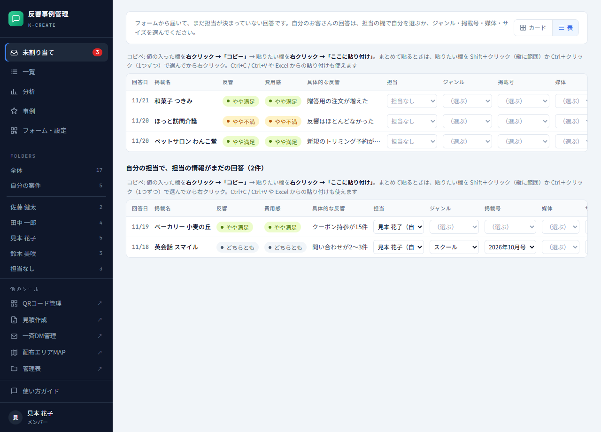
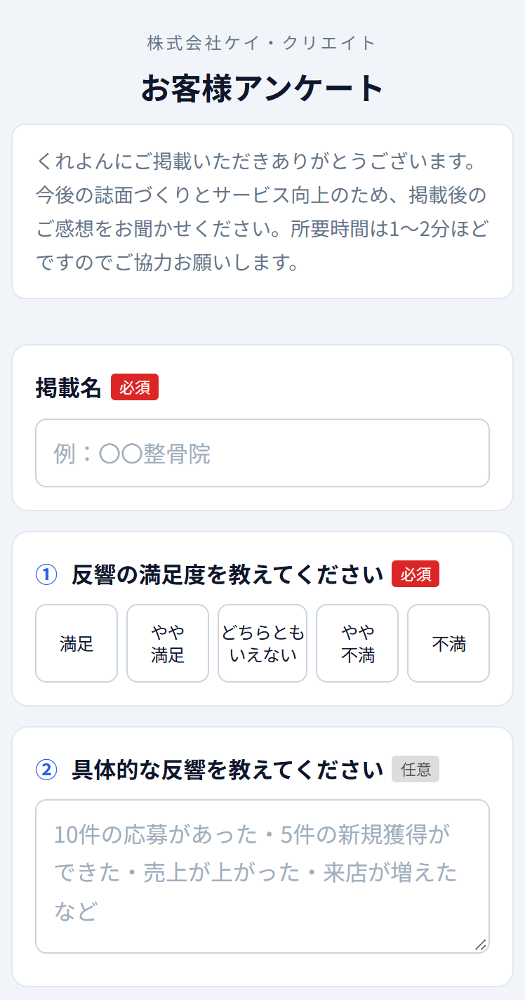
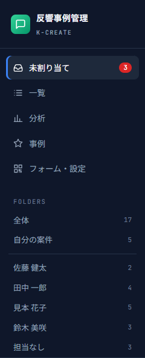
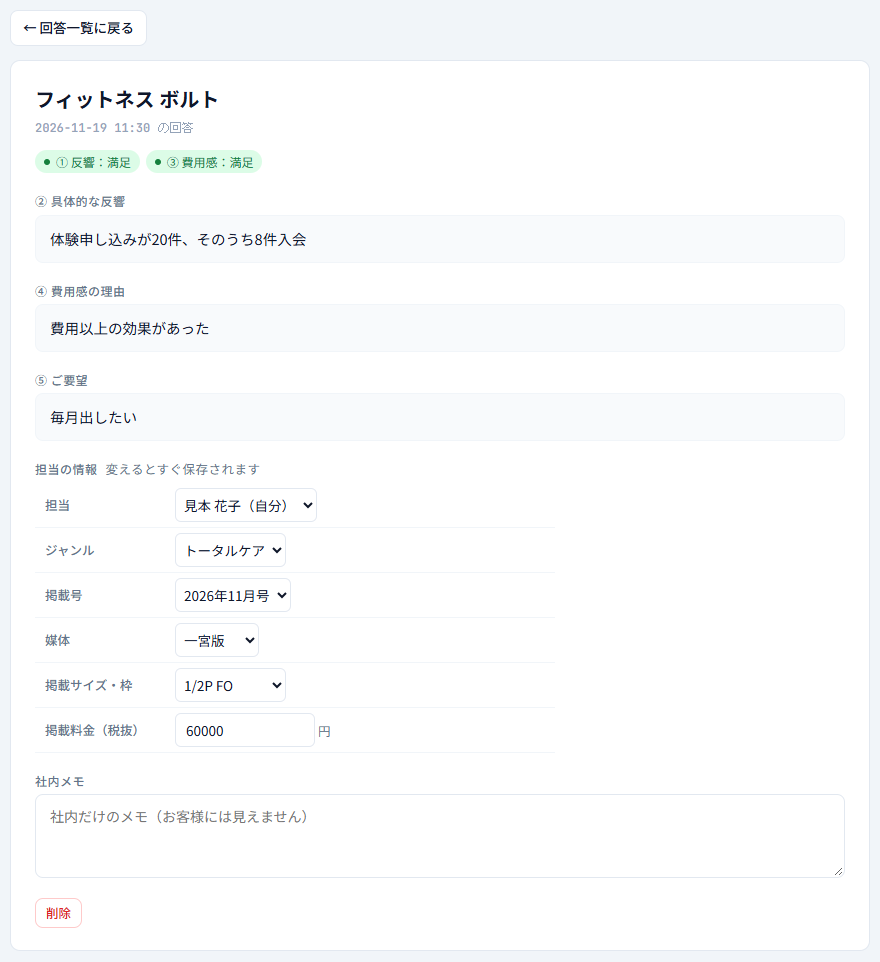
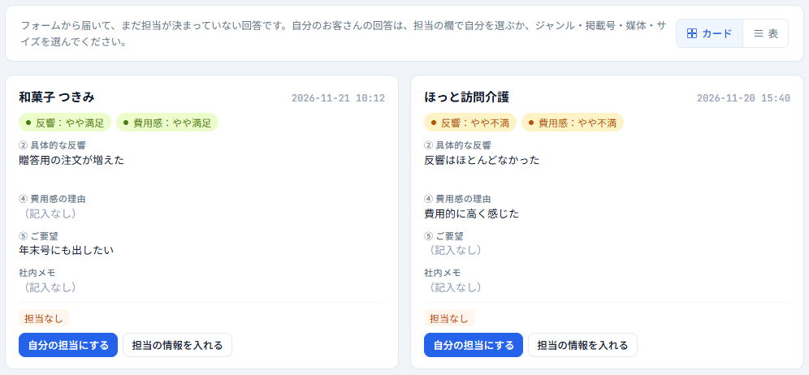
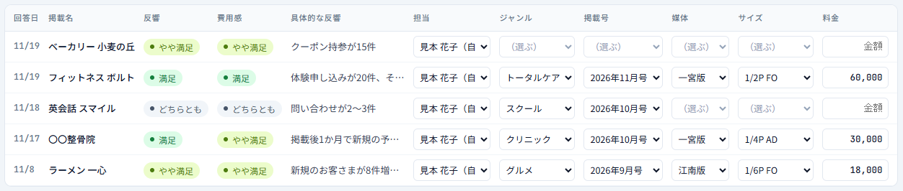
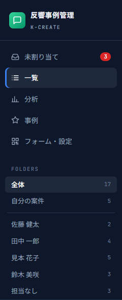
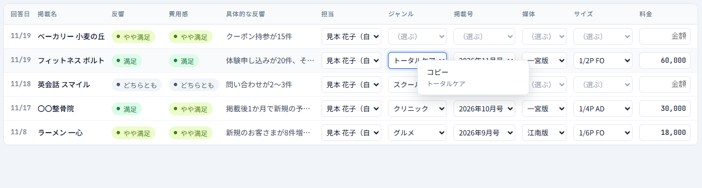
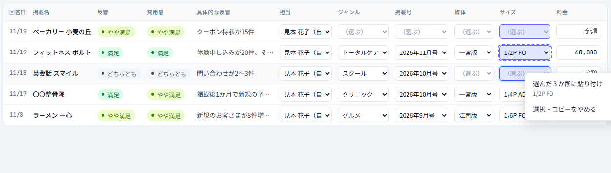
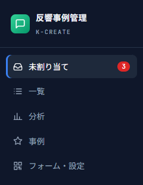

1はじめに
動きで見る：画面の見かた

ここを見ます
掲載していただいたお客様に、反響や費用の感じ方をアンケートで答えていただき、社内で共有・分析するためのサイトです。
- アンケートのURLを渡す
- お客様が答える
- 担当を決める
- ジャンル・掲載号などを入れる
- 分析・事例に活かす
| お客様アンケート | お客様が答える画面です。スマホでもパソコンでも、社外から開けます。お客様のお名前や連絡先は聞きません（聞くのは掲載名だけです）。 |
|---|---|
| 管理サイト | 社内の人だけが使う画面です。会社のGoogleアカウントで開きます（パスワードはありません）。 |
| 練習用のサンプル | 架空のデータで、管理サイトを自由にさわれます。操作しても本物のデータは変わりません。→ サンプルを開く |
管理サイトの左のメニューで、ページを切り替えます。左下の 使い方ガイド を押すと、このページが開きます。スマホで開くと、メニューは画面の上に並びます。
だれが何をできるか
回答は社内の全員が全部見られます（不満やご要望も）。直せる人は次のとおりです。
| やること | できる人 |
|---|---|
| 回答を見る・探す・分析を見る | 全員 |
| 担当が決まっていない回答を、自分の担当にする | 全員 |
| 担当の情報（ジャンル・掲載号など）を入れる・直す | その回答の担当本人と、管理者 |
| 担当を付け替える・はずす・回答を削除する | その回答の担当本人と、管理者 |
| 削除した回答を元に戻す・ジャンルなどの選択肢を増やす | 管理者だけ |
2アンケートを送る
動きで見る：自分専用のアンケートを作って、URL・QRコードを渡す

この順に押します
アンケートは2種類あります。どちらも、お客様にURL か QRコードを渡すだけです。左のメニューの「フォーム・設定」にあります。
| あなた専用のアンケート （おすすめ） | ここから届いた回答は、最初からあなたの担当になります。「自分の担当にする」の手間がいりません。一覧では「専用」の印が付きます。 |
|---|---|
| 共通のアンケート | 全社で1つのURLです。だれのお客様にも使えます。届いた回答は「未割り当て」に入るので、担当の人が「自分の担当にする」を押します（5章）。 |
URLをコピー で、メールやLINEにそのまま貼れます。QRを画像で保存 で、資料などに貼れるQRコードの画像を保存できます。
参考文を変える
お客様の画面の ②④⑤ の欄には、何を書けばよいか分かるように、グレーの参考文が出ています。あなた専用のアンケートでは、この参考文をあなたのお客様向けに変えられます（200文字まで）。欄を空にして保存すると、共通の参考文に戻ります。
3お客様が答える画面
動きで見る：お客様がスマホで答える流れ

この順に押します
質問は6つで、1〜2分ほどで終わります。確認の画面はなく、送信する を押すとすぐに届きます。
| 掲載名 | 必須 |
|---|---|
| ① 反響の満足度 | 必須。満足 ／ やや満足 ／ どちらともいえない ／ やや不満 ／ 不満 から1つ |
| ② 具体的な反響 | 書かなくても送れます |
| ③ 費用感の満足度 | 必須。①と同じ5つから1つ |
| ④ その理由 | 書かなくても送れます |
| ⑤ ご要望 | 書かなくても送れます |
必須の欄が空のまま送ろうとすると、その欄が赤い枠になり「入力されていない項目があります」と出ます。
4回答を見る
動きで見る：回答を探す・絞り込む

この順に押します
動きで見る：回答の全文を見る・その場で直す

この順に押します
「一覧」には、全社の回答が新しい順に並びます。見た目は2つから選べます。どちらにしたかは、そのパソコン（スマホ）が覚えています。
| 表 | 1行に1件。担当の情報を、その場で入れられます（6章）。パソコン向きです。 |
|---|---|
| カード | 1件ずつカードで並びます。②④⑤や社内メモも少し見えます（長い文は途中まで）。 |
左のメニューの下のほうで、全体 ／ 自分の案件 ／ 担当者ごと ／ 担当なし に分けて見られます（スマホでは出ません）。
回答の詳しい画面
表の行（またはカード）を押すと、その回答の詳しい画面が開きます。お客様の文が切れずに全部読めます。自分の担当の回答なら、担当の情報や社内メモもここで直せます。
満足度の色は、緑が「満足」、灰色が「どちらともいえない」、赤が「不満」です。
5自分の担当にする
動きで見る：表で「自分の担当」にする

この順に押します
動きで見る：カードの「自分の担当にする」ボタンで

この順に押します
動きで見る：担当を付け替える・はずす

この順に押します
共通のアンケートから届いた回答は、まだ担当が決まっていません。左のメニューの「未割り当て」に集まります（赤い数字が件数）。担当が決まっていない回答があるときは、サイトを開くと最初にこのページが出ます。
自分のお客様の回答を見つけたら、次のどれかで自分の担当にします。
- 表の「担当」の欄で、自分の名前を選ぶ
- 表で、ジャンル・掲載号などのどれかを選ぶ（入れた人が担当になります）
- カードの 自分の担当にする を押す（続けて担当の情報を入れる画面が開きます）
担当を付け替える・はずす
担当本人は、「担当」の欄で名簿のだれにでも付け替えられます。「担当なし」を選ぶと、担当がはずれて「未割り当て」に戻ります。カードでは 担当をはずす でもはずせます。
ほかの人に付け替えると、その回答は自分では直せなくなります（直せるのは新しい担当と管理者です）。
6担当の情報を入れる
動きで見る：表で、その場で項目を入れる

この順に押します
動きで見る：右クリックでコピー・貼り付け

この順に押します
動きで見る：いくつかの欄にまとめて貼り付け

この順に押します
担当になったら、次の項目を入れます。分析や事例の絞り込みに使うので、なるべく全部入れてください。
| ジャンル | 選択肢から選びます（グルメ、スクール、クリニック など） |
|---|---|
| 掲載号 | 「2026年11月号」のように選びます。1年半前〜半年先まで出ます |
| 媒体 | 何版か（一宮版、江南版 など） |
| 掲載サイズ・枠 | 1/4P FO など |
| 掲載料金 | 税抜の金額を、数字で入れます（円）。「30000」でも「30,000」でも大丈夫です |
| 社内メモ | 書かなくてもかまいません。お客様には見えません。詳しい画面か、カードのボタンから入れます |
表と詳しい画面では、選んだらすぐ保存されます（保存ボタンはありません）。料金は、数字を入れて Enter を押すか、欄の外を押すと保存されます。カードの 担当の情報を入れる から入れたときは、最後に 保存する を押します。
コピー・貼り付けのまとめ
| 1か所に貼る | 元の欄を右クリック →「コピー」→ 貼りたい欄を右クリック →「ここに貼り付け」 |
|---|---|
| まとめて貼る | 貼りたい欄を選んでから右クリック。Shift＋クリックで縦に続けて、Ctrl＋クリックで1つずつ選べます（同じ列の中だけ） |
| やめる | Esc キー、または右クリック →「選択・コピーをやめる」 |
| キーボードで | Ctrl＋C と Ctrl＋V も使えます |
| Excel から | Excel でコピーした文字も貼れます。縦に何行かコピーしたときは、選んだ欄から下へ順に入ります |
担当・料金の列も、同じようにコピー・貼り付けできます。選択肢にない文字は貼れません（「選択肢にない値なので貼り付けられませんでした」と出ます）。料金に貼れるのは数字だけです。
7分析・事例を見る
動きで見る：分析と事例を見る

この順に押します
「分析」では、満足度の平均と内訳を、いろいろな切り口でくらべられます。満足度は 満足＝5、やや満足＝4、どちらともいえない＝3、やや不満＝2、不満＝1 として平均します。
| 上の4つの数字 | 回答数 ／ 反響満足度の平均 ／ 費用感満足度の平均 ／ 担当が決まっていない回答の数。平均の下には「満足・やや満足」の割合が出ます |
|---|---|
| くらべる切り口 | ジャンル別 ／ 媒体別 ／ 掲載サイズ別 ／ 担当別 ／ 掲載号別 ／ 掲載料金別（2万円未満・2〜5万円・5〜10万円・10〜20万円・20万円以上） |
| （未入力） | その項目がまだ入っていない回答は、ここにまとまります |
「掲載号」で範囲を決めると、その間の回答だけで集計します（掲載号が入っていない回答は数えません）。削除した回答は数えません。
事例
「事例」には、反響が「満足」「やや満足」で、具体的な反響が書かれている回答だけが、満足度の高い順に並びます。ジャンル・媒体で絞り込めます。営業の話のネタや、提案資料にどうぞ。
8困ったとき
- 自分のお客様の回答が「未割り当て」にない
- あなた専用のアンケートから届いた回答は、最初からあなたの担当です。「一覧」の「自分の案件」を見てください。
- 欄が文字だけで、選べない・直せない
- ほかの人の担当の回答です。直せるのは担当本人と管理者だけです。自分の担当にしたいときは、いまの担当の人に付け替えてもらってください。
- まちがえて自分の担当にしてしまった
- 「担当」の欄で「担当なし」を選ぶと、元に戻ります。
- 選びたいジャンル・サイズが選択肢にない
- 選択肢は管理者が増やせます。管理者に頼んでください。
- 「選択肢にない値なので貼り付けられませんでした」と出た
- ちがう列の値を貼ろうとしたか、Excel の文字が選択肢と少しちがいます。同じ列の中でコピー・貼り付けするか、1つずつ選んでください。
- 料金が保存されない
- 数字だけを入れて Enter を押してください。「万」などの文字が入っていると保存できません。
- 「削除」を押しても消えない
- 1回目は「もう一度押すと削除」に変わるだけです。数秒のうちに、もう一度押してください。
- まちがえて削除してしまった
- 管理者なら元に戻せます。管理者に頼んでください。
- ほかの人が入れた内容が出てこない
- ページを開き直すと、最新の内容になります。
- 表の右のほうが見えない
- 画面がせまいときは、表の中を横に動かすと見られます（表の下のスクロールバーなど）。
- 「会社のGoogleアカウントで開いてください」と出る
- 個人のGoogleアカウントで開いています。会社のアカウントでログインし直してください。
- お客様から「送信できない」と言われた
- 掲載名・①・③ の3つは必須です。空の欄がないか見てもらってください。それでも送れないときは、少し時間をおいてもう一度お願いしてください。